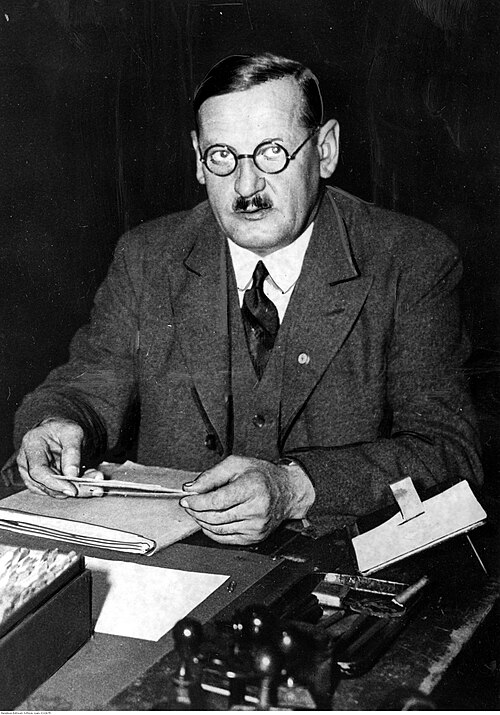
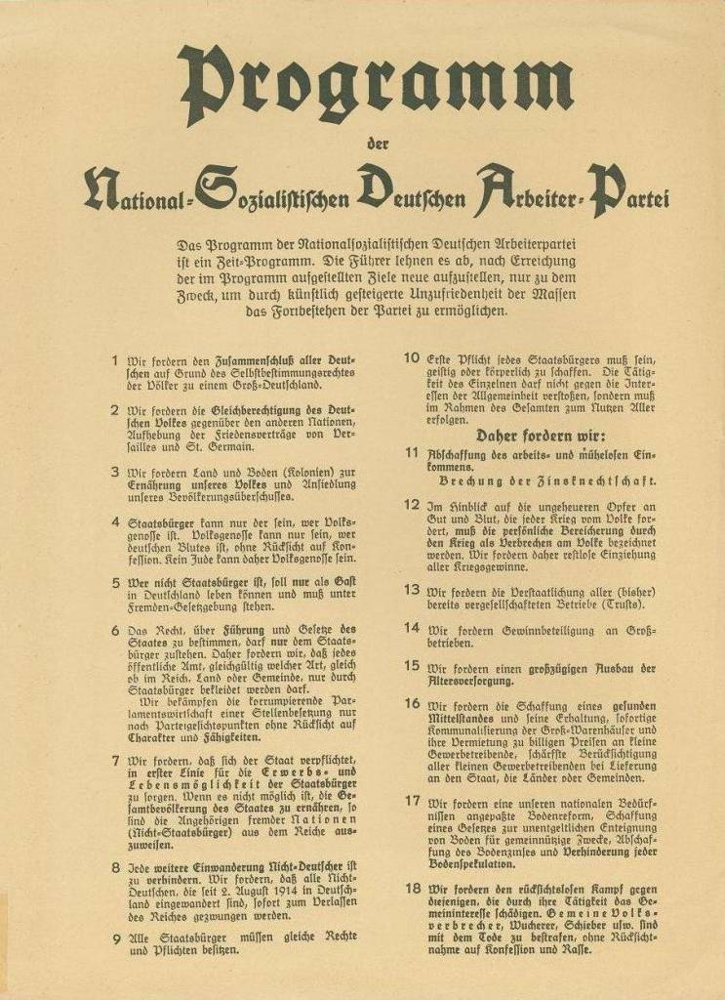
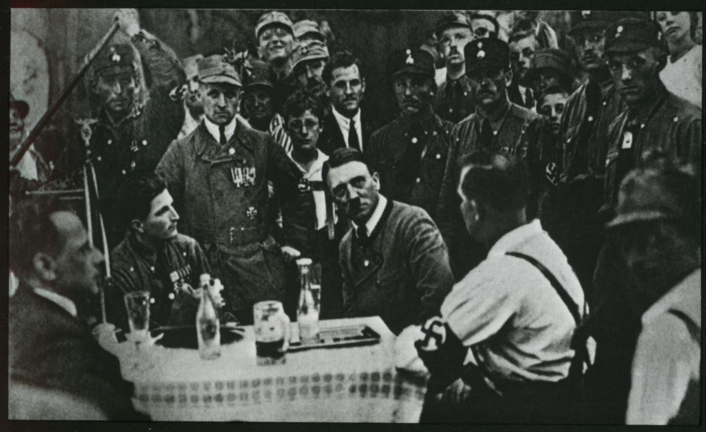
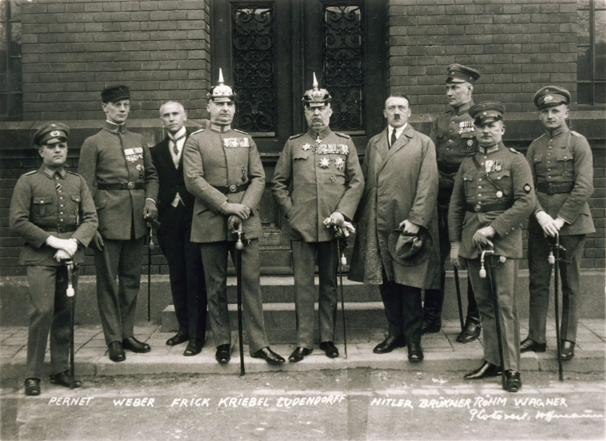
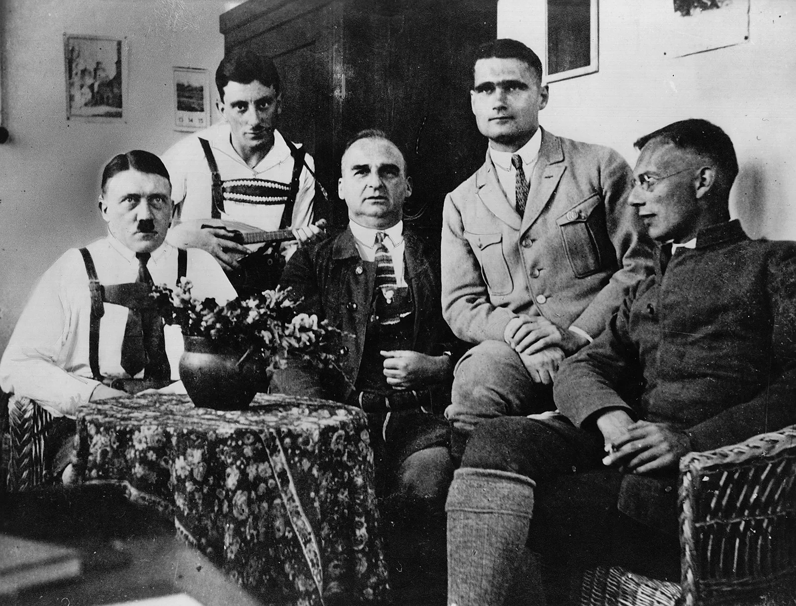
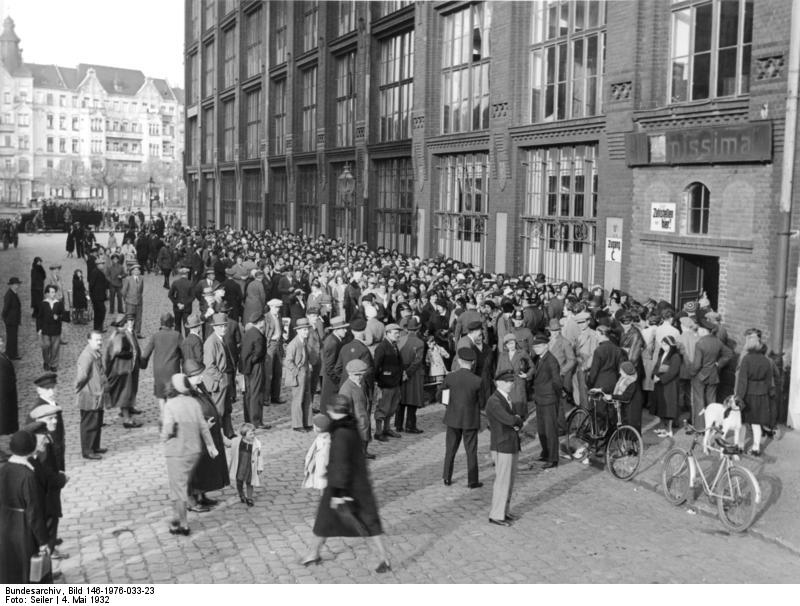
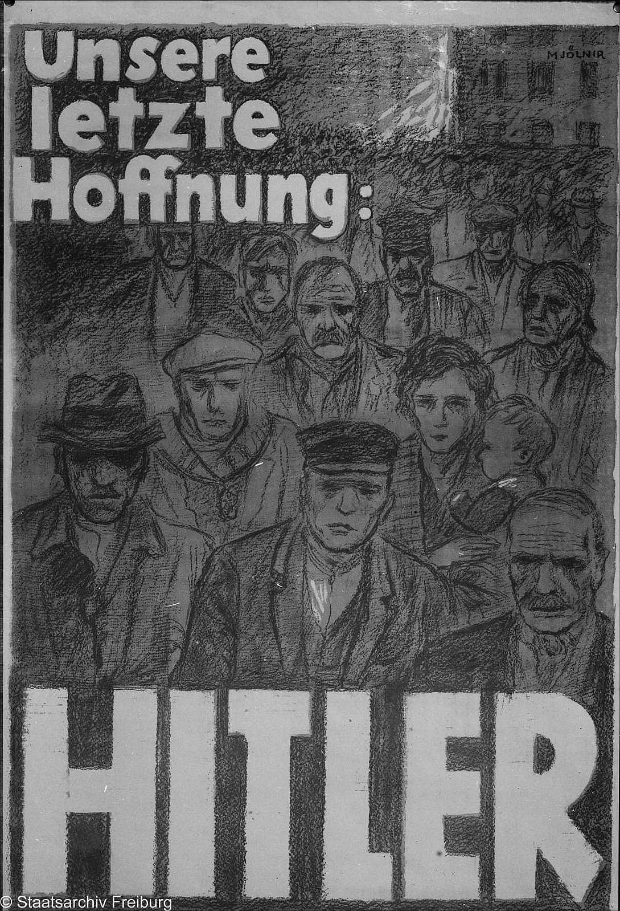
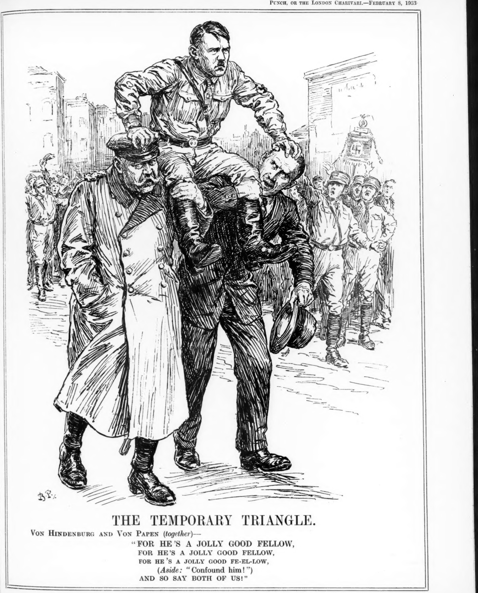
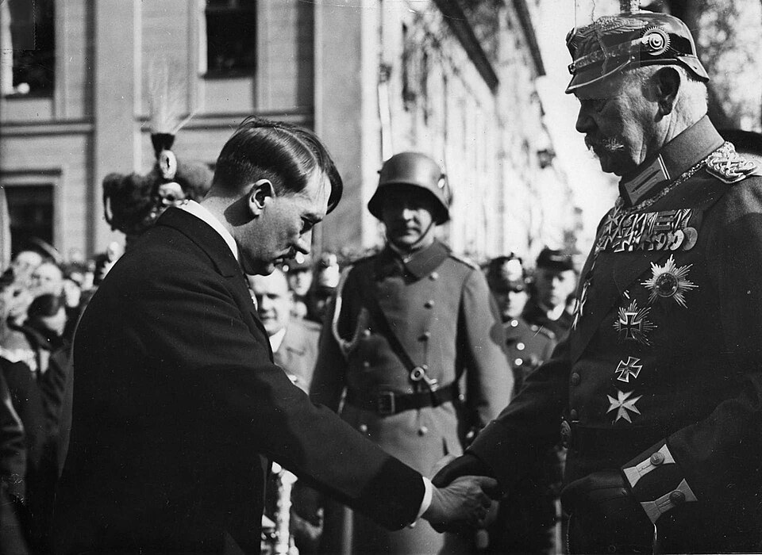

Key Topic 2: Hitler's Rise to Power, 1919-33
Paper 3: Weimar and Nazi Germany, 1918-39
Course Textbook
Enquiry: From Democracy to Dictatorship: How did Hitler destroy the Weimar Republic?
Contents
|
Lesson 1: KT2.1: The Early Development of the Nazi Party, 1919–1922
|
|
|
Lesson 2: KT2.2: The Munich Putsch and the Lean Years, 1923–1929
|
|
|
Lesson 3: KT2.3: The Growth of Nazi Support, 1929–1932
|
|
|
Lesson 4: KT2.4: How Hitler Became Chancellor, 1932–1933
|
|
L1: KT2.1: The Early Development of the Nazi Party, 1919–1922[[SRC_MARKER:L4_Start]]
Learning Objectives
Explain how Adolf Hitler encountered and joined Anton Drexler’s German Workers’ Party (DAP) in 1919.
Analyse how the 25-Point Programme combined extreme nationalism, virulent anti-Semitism, and populist socialist promises.
Assess the impact of party rebranding and visual symbolism, specifically the swastika flag and Völkischer Beobachter newspaper.
Examine how Hitler established absolute dictatorial authority (Führerprinzip) over the party in July 1921.
Evaluate the formation and strategic role of the Sturmabteilung (SA) under Ernst Röhm in pioneering paramilitary street terror.
Recall & Retrieval
1. What was the Spartacist Uprising (1919)?
2. Who led the Spartacist Uprising?
3. Who were the Freikorps?
4. What was the Kapp Putsch (1920)?
5. How did the government defeat the Kapp Putsch?
6. How much were the reparations set at?
7. What was the War Guilt Clause?
8. What was Article 48?
9. What was the 'stab in the back' myth?
10. What is a 'republic'?
Vocabulary Check
The Odd One Out: Circle ONE term that does not belong with the others. Explain your reasoning: What historical connection links the other terms, and why is your chosen term different?
DAP (German Workers' Party) | NSDAP (National Socialist German Workers' Party) | 25-Point Programme | Nationalism | Socialism | SA (Sturmabteilung) | Stosstrupp (Shock Troop) | Völkischer Beobachter
Teacher Model / Pupil Reasoning:
[[SRC_MARKER:L4_Source_3]]
Source S1: Anton Drexler, Founder of the German Workers’ Party (DAP) (1919)

Anton Drexler, Munich locksmith and founder of the German Workers’ Party (DAP), which Adolf Hitler joined in September 1919 as party member 555.
[1.1] In September 1919, army intelligence sent Corporal Adolf Hitler to investigate the tiny German Workers’ Party (DAP) in a Munich beer cellar. Founded by railway mechanic Anton Drexler (Source A), the party had just forty members.
[1.2] When a speaker suggested Bavarian independence, Hitler delivered a fiery nationalist response that impressed Drexler. Given Drexler’s pamphlet, Hitler joined the executive committee as member 555, quickly taking charge of party propaganda.
[[SRC_MARKER:L4_Source_4]]
Source S2: The 25-Point Programme of the NSDAP (February 1920)

The official published manifesto of the 25-Point Programme, drafted by Anton Drexler and Adolf Hitler, announced at the Hofbräuhaus in Munich on 24 February 1920.
[2.1] (Source B) In February 1920, Hitler and Drexler drafted the party’s core Twenty-Five Point Programme. The manifesto combined fierce nationalism, antisemitism, and anti-capitalism, demanding the destruction of the Versailles Treaty and union with Austria.
[2.2] In 1920, the group rebranded as the National Socialist German Workers’ Party (NSDAP), adopting the swastika emblem and purchasing the Völkischer Beobachter newspaper to broadcast their radical message.
[3.1] In July 1921, Hitler challenged Drexler for the party leadership, threatening to resign unless granted dictatorial authority. Members voted overwhelmingly to install Hitler as party chairman under the supreme Führerprinzip.
[3.2] Hitler’s magnetic oratorical technique packed Munich beer cellars. Speaking without notes, he began quietly before building to frenzied climaxes, blaming Versailles, communists, and Jews for all of Germany’s misfortunes.
[[SRC_MARKER:L4_Source_6]]
Source S3: Adolf Hitler Addressing a Munich Beer Hall Meeting in the 1920s

Adolf Hitler delivering a passionate speech to NSDAP supporters in a Munich beer hall during the early 1920s, demonstrating his theatrical oratory and gestures.
[4.1] (Source C) In August 1921, Hitler established the party’s paramilitary wing: the Sturmabteilung (SA), or Brownshirts. Recruited largely from violent ex-Freikorps veterans, the SA was led by Ernst Röhm.
[4.2] The brownshirt stormtroopers performed three essential tasks: guarding Nazi meetings, distributing propaganda leaflets, and violently breaking up rival communist and social democratic rallies in the streets.
[5.1] By late 1922, the NSDAP had expanded to 20,000 members, emerging as the dominant radical right-wing force in Bavaria. The party secured financial backing from wealthy Munich nationalists and aristocratic sympathisers.
[5.2] However, outside Bavaria, the party remained an obscure fringe movement with zero national influence. Hitler realized he needed an audacious political stroke to seize national attention.
Pair & Share Activity
Q1. Discuss with your partner: Why did the Nazi Party appeal to people in the early 1920s?
The 'But/Because/So' Strategy
Q2. Complete the following sentences based on the provided narrative: 1) Hitler joined the DAP in 1919 BUT... 2) The DAP changed its name to NSDAP in 1920 BECAUSE... 3) The SA was formed in 1921 SO...
Vocabulary in Context
Q3. Write a short paragraph (approx. 75-100 words) describing the early development of the Nazi Party, ensuring you use at least FIVE of the following keywords: DAP, NSDAP, 25-Point Programme, Nationalism, Socialism, SA, Stosstrupp, Völkischer Beobachter.
Causal Linkage
Q4. Explain the causal link between Hitler's leadership and the rapid growth and radicalisation of the Nazi Party between 1919 and 1922. How did his actions directly contribute to these outcomes?
Counter-Factual History
Q5. Imagine that the **SA** (Sturmabteilung) was never formed, or was quickly suppressed by authorities, during the 1919-1922 period. How might the early development of the Nazi Party have differed significantly, and what implications would this have had for its ability to gain influence?
[[SRC_MARKER:L4_Source_0]]
Source S4: Anton Drexler, Founder of the German Workers’ Party (DAP) (1919)
Anton Drexler, Munich locksmith and founder of the German Workers’ Party (DAP), which Adolf Hitler joined in September 1919 as party member 555.
[[SRC_MARKER:L4_Source_1]]
Source S5: The 25-Point Programme of the NSDAP (February 1920)
The official published manifesto of the 25-Point Programme, drafted by Anton Drexler and Adolf Hitler, announced at the Hofbräuhaus in Munich on 24 February 1920.
[[SRC_MARKER:L4_Source_2]]
Source S6: Adolf Hitler Addressing a Munich Beer Hall Meeting in the 1920s
Adolf Hitler delivering a passionate speech to NSDAP supporters in a Munich beer hall during the early 1920s, demonstrating his theatrical oratory and gestures.
GCSE Exam Practice
Q6. 1. Give two things you can infer from Source A about the core beliefs of the Nazi Party in 1920. [4 marks]
Q7. 2. Explain why the Nazi Party gained support in Munich in the years 1919–1922. [12 marks]
L2: KT2.2: The Munich Putsch and the Lean Years, 1923–1929[[SRC_MARKER:L5_Start]]
Learning Objectives
Explain the causes and immediate execution of the Bürgerbräukeller armed putsch on 8 November 1923.
Analyse why the Munich Putsch collapsed in violent defeat on 9 November 1923 at the Odeonsplatz.
Assess how Hitler converted the 1924 Munich Treason Trial and his Landsberg imprisonment into a propaganda triumph.
Examine how the Bamberg Conference of 1926 resolved internal party splits and established the legal strategy (Legality Principle).
Evaluate why the NSDAP suffered heavy electoral failure in the May 1928 Reichstag election despite internal reorganization.
Recall & Retrieval
1. Why did France and Belgium invade the Ruhr in 1923?
2. How did German workers react to the Ruhr invasion?
3. What caused Hyperinflation in 1923?
4. Who suffered most from Hyperinflation?
5. Who benefitted from Hyperinflation?
6. Who were the Freikorps?
7. Who led the Spartacist Uprising?
8. How was the Kapp Putsch defeated?
9. What was Proportional Representation?
10. What were the military restrictions of the Treaty of Versailles?
Vocabulary Check
The Golden Sentence: Choose TWO terms from the word bank. Write ONE grammatically sophisticated, historically accurate sentence connecting them using a causal conjunction (because, although, or consequently):
The Bavarian Triumvirate | Treason | Landsberg Prison | Mein Kampf ('My Struggle') | Führerprinzip (The Leadership Principle) | Gauleiter | SS (Schutzstaffel) | Aryan
Teacher Model / Pupil Sentence:[1.1] By autumn 1923, hyperinflation and the French occupation of the Ruhr pushed Germany to the brink of civil war. Stresemann’s ending of passive resistance enraged Bavarian nationalists, who saw it as cowardly capitulation.
[1.2] Inspired by Mussolini’s 1922 March on Rome, Hitler decided to launch a coup from Munich. With the backing of First World War hero General Ludendorff, Hitler planned to seize Bavaria’s government before marching on Berlin.
[2.1] On the evening of 8 November 1923, Bavarian leader Gustav von Kahr addressed 3,000 businessmen in Munich’s Bürgerbräukeller. Hitler and 600 SA stormtroopers surrounded the hall, firing a pistol into the ceiling.
[2.2] Forcing Kahr into a back room at gunpoint, Hitler demanded his support for the national revolution. When Ludendorff endorsed the putsch, Kahr reluctantly agreed, but promptly warned the state police once released.
[[SRC_MARKER:L5_Source_4]]
Source S1: Defendants at the Munich Putsch Treason Trial (February–April 1924)

Adolf Hitler, General Erich Ludendorff, and co-defendants photographed outside the Munich People’s Court during their treason trial in spring 1924.
[3.1] (Source A) At noon on 9 November 1923, Hitler and Ludendorff led 2,000 armed Nazis toward Munich’s central square. At the Residenzstraße, police opened fire: sixteen Nazis and four police officers were killed.
[3.2] Ludendorff marched calmly through the gunfire, but Hitler dislocated his shoulder and fled by car. Two days later, Hitler was arrested at a friend’s country house, and the Nazi Party was banned.
[[SRC_MARKER:L5_Source_5]]
Source S2: Adolf Hitler in Landsberg Prison Drafting Mein Kampf (1924)

Adolf Hitler photographed inside his comfortable cell at Landsberg Fortress in 1924, where he dictated his political autobiography Mein Kampf to Rudolf Hess.
[4.1] Hitler’s trial in February 1924 proved a propaganda masterstroke (Source B). Sympathetic judges gave him unlimited speaking time to denounce the Weimar Republic, transforming his treason trial into a national stage.
[4.2] Sentenced to a lenient five years at Landsberg Fortress, Hitler served just nine months. There he dictated Mein Kampf to Rudolf Hess, outlining his ideas on racial hierarchy, Lebensraum, and the total destruction of democracy.
[5.1] Released in December 1924, Hitler relaunched the party at the 1926 Bamberg Conference, establishing tight control. He organized the party into regional branches (Gaue) and founded the elite SS bodyguard.
[5.2] Yet between 1924 and 1929—the "Lean Years"—prosperity under Stresemann sidelined extremism: the Nazis won just twelve Reichstag seats (2.6%) in the 1928 national election.
Pair & Share Activity
Q1. Discuss with your partner: Was the Munich Putsch a total failure for Hitler?
The 'But/Because/So' Strategy
Q2. Complete the following sentences based on the lesson narrative:
1. Hitler's Munich Putsch failed to seize power in 1923, BUT...
2. Hitler received a lenient sentence for treason BECAUSE...
3. During his time in Landsberg Prison, Hitler wrote *Mein Kampf*, SO...
Vocabulary in Context
Q3. Using at least FOUR of the following keywords – *Mein Kampf*, Führerprinzip, Gauleiter, SS, Aryan, Landsberg Prison, Treason – explain how Hitler used his time in prison and the subsequent "Lean Years" to reshape the Nazi Party and its ideology.
Causal Linkage
Q4. Explain how the failure of the Munich Putsch and Hitler's subsequent imprisonment, despite being a setback, ultimately strengthened his position and the long-term trajectory of the Nazi Party.
The 'What If' Challenge
Q5. Imagine a counter-factual scenario where the Bavarian Triumvirate (Kahr, Lossow, Seisser) had *not* reneged on their initial agreement with Hitler during the Munich Putsch, and instead had supported his 'national revolution'. What might have been the immediate and long-term consequences for Germany, the Weimar Republic, and the rise of Nazism? Consider both political and social impacts.
[[SRC_MARKER:L5_Source_0]]
Source S3: Defendants at the Munich Putsch Treason Trial (February–April 1924)
Adolf Hitler, General Erich Ludendorff, and co-defendants photographed outside the Munich People’s Court during their treason trial in spring 1924.
[[SRC_MARKER:L5_Source_1]]
Source S4: Adolf Hitler in Landsberg Prison Drafting Mein Kampf (1924)
Adolf Hitler photographed inside his comfortable cell at Landsberg Fortress in 1924, where he dictated his political autobiography Mein Kampf to Rudolf Hess.
GCSE Exam Practice
Q6. 1. How useful is Source B for an enquiry into the defeat of the Munich Putsch in November 1923? [6 marks]
Q7. 2. Explain why the Nazi Party experienced the 'Lean Years' between 1924 and 1928. [12 marks]
L3: KT2.3: The Growth of Nazi Support, 1929–1932[[SRC_MARKER:L6_Start]]
Learning Objectives
Explain how the October 1929 Wall Street Crash shattered Germany’s fragile banking and industrial system.
Analyse how mass unemployment and Chancellor Heinrich Brüning’s austerity destroyed democratic parliamentary governance.
Assess how fear of a Communist revolution pushed the German middle classes and big business into supporting Hitler.
Examine the innovative, modern propaganda techniques engineered by Joseph Goebbels across German society.
Evaluate the electoral breakthrough of July 1932 and why President Hindenburg initially refused to appoint Hitler as Chancellor.
Recall & Retrieval
1. Who became Chancellor in 1923 and helped end hyperinflation?
2. What new currency did Stresemann introduce in 1923?
3. What was the Dawes Plan (1924)?
4. What was the Young Plan (1929)?
5. What was the Locarno Pact (1925)?
6. Why did France invade the Ruhr in 1923?
7. What was passive resistance?
8. Who suffered most from hyperinflation?
9. What was the Kapp Putsch?
10. What was Article 231?
Vocabulary Check
Conceptual Classification: Categorise the terms from the word bank into the two historical boxes below:
The Wall Street Crash | KPD (Communist Party of Germany) | Hermann Müller | Heinrich Brüning | Article 48 | Negative Cohesion | Rotfrontkämpferbund (Red Front Fighters' League)
Power, Governance & Warfare
Economy, Trade & Society
[1.1] In October 1929, the Wall Street stock market crashed, plunging the global economy into depression. American banks abruptly recalled their 90-day Dawes Plan loans, draining Germany of investment capital.
[1.2] Without credit, 50,000 German businesses went bankrupt, and major institutions like Danatbank collapsed. By 1932, German industrial production fell by 40%, throwing millions of factory workers out of work.
[[SRC_MARKER:L6_Source_3]]
Source S1: Long Queues Outside the Berlin Labour Exchange during the Great Depression (1930–1932)

Large crowds of unemployed German workers queuing for relief payments outside the municipal labour exchange (Arbeitsamt) in Berlin as unemployment soared past six million.
[2.1] (Source A) Unemployment soared from 1.3 million in 1929 to over six million by early 1932. One in three German workers was jobless, with millions surviving on meager municipal breadlines and soup kitchens.
[2.2] Chancellor Heinrich Brüning slashed welfare payments and raised taxes, earning the title "The Hunger Chancellor." Unable to secure parliamentary majorities, Brüning relied entirely on President Hindenburg’s Article 48 emergency decrees.
[3.1] As democratic institutions faltered, voters deserted moderate parties for radicals. The Communist Party (KPD) surged to 100 seats in 1932, terrifying middle-class business owners and wealthy landowners.
[3.2] Hitler presented the Nazis as the sole bulwark against communist revolution. Propagandist Joseph Goebbels produced modern campaigns, chartering aircraft ("Hitler over Germany") to address multiple mass rallies daily.
[[SRC_MARKER:L6_Source_5]]
Source S2: "Our Last Hope: Hitler" Nazi Election Poster (1932)

Famous NSDAP campaign poster by artist Mjölnir (Hans Schweitzer) for the 1932 presidential election, showing desperate faces of unemployed workers looking up towards Hitler’s name.
[4.1] Nazi propaganda targeted specific grievances with tailored appeals (Source B). Farmers were promised agricultural price protection, while small shopkeepers were promised curbs on big Jewish-owned department stores.
[4.2] Crucially, the 400,000-strong SA gave an impression of disciplined order amidst economic chaos, staging torchlight parades and violently brawling with communist Red Front fighters in working-class neighborhoods.
[5.1] The breakthrough came in the July 1932 election: the NSDAP won 230 seats (37.3%), becoming the largest party in the Reichstag. Hitler had transformed a fringe group into a mass electoral force.
[5.2] With the Reichstag paralyzed by extremist factions, normal parliamentary governance ended. Hitler demanded the chancellorship, but President Hindenburg refused, calling him a "bohemian corporal."
Pair & Share Activity
Q1. Discuss with your partner: Why did Nazi support surge after 1929?
The 'But/Because/So' Strategy
Q2. Complete the following sentences based on the lesson narrative: 1) The Grand Coalition government under Hermann Müller collapsed BUT... 2) Heinrich Brüning increasingly relied on Article 48 BECAUSE... 3) Nazi support grew dramatically between 1929 and 1932 SO...
Vocabulary in Context
Q3. Write a short paragraph (approximately 100-150 words) explaining the political and economic crisis in Germany between 1929-1932, accurately using at least five of the following keywords: Wall Street Crash, Hermann Müller, Heinrich Brüning, Article 48, KPD, Negative Cohesion, Rotfrontkämpferbund.
Prioritising Causes
Q4. Identify and explain the *two most significant* reasons for the rapid growth of Nazi support between 1929 and 1932, justifying your choices with specific evidence from the lesson narrative.
Counter-Factual History
Q5. "If the Wall Street Crash had not occurred in October 1929, the Nazis would never have come to power." To what extent do you agree with this statement? Justify your answer with reference to the lesson narrative, considering both arguments for and against the statement.
[[SRC_MARKER:L6_Source_0]]
Source S3: Long Queues Outside the Berlin Labour Exchange during the Great Depression (1930–1932)
Large crowds of unemployed German workers queuing for relief payments outside the municipal labour exchange (Arbeitsamt) in Berlin as unemployment soared past six million.
[[SRC_MARKER:L6_Source_1]]
Source S4: "Our Last Hope: Hitler" Nazi Election Poster (1932)
Famous NSDAP campaign poster by artist Mjölnir (Hans Schweitzer) for the 1932 presidential election, showing desperate faces of unemployed workers looking up towards Hitler’s name.
GCSE Exam Practice
Q6. 3(a) Part 1: Content & Provenance (COP) Comparative Analysis for Sources B & C. [4 marks]
Q7. 3(a). How useful are Sources B and C for an enquiry into the reasons for the growth of Nazi support in the years 1929–1932? [8 marks]
L4: KT2.4: How Hitler Became Chancellor, 1932–1933[[SRC_MARKER:L7_Start]]
Learning Objectives
Explain why the November 1932 Reichstag election represented a dangerous setback and financial crisis for the NSDAP.
Analyse why General Kurt von Schleicher’s brief chancellorship alienated conservative Prussian landowners (Junkers).
Assess how Franz von Papen and industrial financiers forged a secret alliance with Hitler at the Schroeder Villa in January 1933.
Examine the fatal miscalculation of the conservative political elites who believed they could control Hitler ("boxed in").
Evaluate the significance of Hitler’s legal appointment as Chancellor on 30 January 1933 and the symbolic torchlight parade.
Recall & Retrieval
1. When did Germany join the League of Nations?
2. What was the Kellogg-Briand Pact (1928)?
3. Why did the 'Golden Age' (1924-29) rely on 'dancing on a volcano'?
4. How did culture change during the Golden Age?
5. What did Stresemann introduce to fix hyperinflation?
6. What was the Dawes Plan?
7. What was the Young Plan?
8. What was the Locarno Pact?
9. Why did the French invade the Ruhr?
10. Who were the November Criminals?
Vocabulary Check
Spot the Deliberate Error: Read the statement below. One historical fact or vocabulary concept has been deliberately falsified. Underline the error and explain the accurate historical reality below:
Paul von Hindenburg | The Camarilla | Franz von Papen | Kurt von Schleicher | Backstairs Intrigue | Cabinet
"In January 1933, President Paul von Hindenburg appointed Adolf Hitler Chancellor following a nationwide democratic election victory, rejecting all Backstairs Intrigue from Franz von Papen and the Camarilla."
Teacher Model / Historical Correction:[1.1] In the November 1932 election, the Nazi vote declined by two million votes, dropping from 230 to 196 seats. Campaign costs had exhausted party funds, and Goebbels wrote of gloom in his diary.
[1.2] Organization leader Gregor Strasser urged Hitler to compromise and join a coalition government. Furious at what he viewed as betrayal, Hitler purged Strasser, leaving the party command unified around his leadership.
[2.1] In December 1932, Hindenburg appointed General Kurt von Schleicher as Chancellor. Schleicher attempted to split the Nazi Party by offering Strasser the vice-chancellorship, but the plot collapsed.
[2.2] Schleicher then alienated rich Prussian landowners by proposing to redistribute bankrupt estates to unemployed workers. Hindenburg, himself a wealthy Prussian landowner, withdrew his presidential confidence.
[3.1] Ousted Chancellor Franz von Papen sought revenge against Schleicher. Papen formed a secret alliance with Hitler, meeting secretly in Cologne with bankers and industrial magnates.
[3.2] Papen persuaded Hindenburg that appointing Hitler Chancellor was the only way to secure a conservative Reichstag majority, boasting that he would box Hitler in: "Within two months, we will have pushed Hitler into a corner until he squeals!"
[[SRC_MARKER:L7_Source_5]]
Source S1: "A Shrewd Move" British Political Cartoon on Franz von Papen and Hitler (January 1933)

British political cartoon commenting on Franz von Papen’s scheme to tame Adolf Hitler by installing him as Chancellor while surrounding him with conservative aristocratic ministers.
[4.1] The conservative elites engineered a coalition where Nazis held only three of twelve cabinet posts: Hitler as Chancellor, Wilhelm Frick as Interior Minister, and Hermann Göring as Prussian minister.
[4.2] British political cartoonists captured this fatal miscalculation (Source A), showing Papen attempting to tame an uncontrollable predator. The conservative establishment mistakenly believed traditional cabinet procedures would restrain Hitler.
[[SRC_MARKER:L7_Source_6]]
Source S2: President Paul von Hindenburg and Chancellor Adolf Hitler (30 January 1933)

Reich President Paul von Hindenburg shaking hands with newly appointed Chancellor Adolf Hitler outside the presidential palace in Berlin on 30 January 1933.
[5.1] (Source B) On 30 January 1933, President Hindenburg formally swore in Adolf Hitler as Chancellor of the German Republic. That evening, 25,000 uniformed SA men staged a triumphant torchlight parade through the Brandenburg Gate.
[5.2] Hitler had achieved power legally through constitutional appointment. However, his conservative partners had gravely underestimated him: within months, Hitler used state power to dismantle the Weimar Republic entirely.
Pair & Share Activity
Q1. Discuss with your partner: Did Hitler seize power or was it handed to him?
The 'But/Because/So' Strategy
Q2. Complete the following sentences based on the lesson:
1. Kurt von Schleicher became Chancellor in December 1932, BUT...
2. Franz von Papen wanted to get back into power BECAUSE...
3. President Hindenburg ultimately appointed Hitler as Chancellor SO...
Vocabulary in Context
Q3. Write a short paragraph (5-7 sentences) explaining how Hitler became Chancellor, making sure to use ALL the following keywords: Paul von Hindenburg, The Camarilla, Franz von Papen, Kurt von Schleicher, Backstairs Intrigue, Cabinet. You may underline or bold the keywords in your answer.
Prioritising Causes
Q4. Of the factors described in the lesson, which do you think was the *most* important in Hitler becoming Chancellor? Explain your reasoning. Then, identify one *other* important factor and explain its significance.
Counter-Factual History
Q5. Imagine that President Hindenburg had refused to meet with Franz von Papen and Hitler in early January 1933, or had simply dismissed Papen's proposals outright. What do you think would have been the most likely immediate political consequences for Germany? Consider the roles of Schleicher, the Nazi Party, and the broader political climate.
[[SRC_MARKER:L7_Source_0]]
Source S3: "A Shrewd Move" British Political Cartoon on Franz von Papen and Hitler (January 1933)
British political cartoon commenting on Franz von Papen’s scheme to tame Adolf Hitler by installing him as Chancellor while surrounding him with conservative aristocratic ministers.
[[SRC_MARKER:L7_Source_1]]
Source S4: President Paul von Hindenburg and Chancellor Adolf Hitler (30 January 1933)
Reich President Paul von Hindenburg shaking hands with newly appointed Chancellor Adolf Hitler outside the presidential palace in Berlin on 30 January 1933.
GCSE Exam Practice
Q6. 3(b). Study Interpretations 1 and 2. They give different views about how Hitler became Chancellor in 1932–33. What is the main difference between these views? [4 marks]
Q7. 3(d). How far do you agree with Interpretation 2 about how Hitler became Chancellor in 1932–33? Explain your answer, using both interpretations and your knowledge of the historical context. [16 marks]
Generated: 2026-10-19 15:36:42 UTC | Unit: weimar_nazi_germany